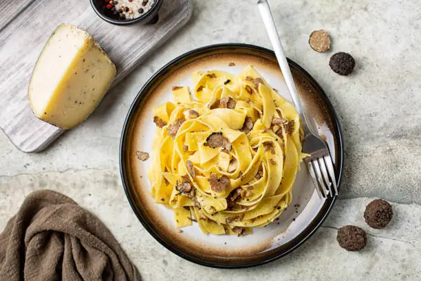
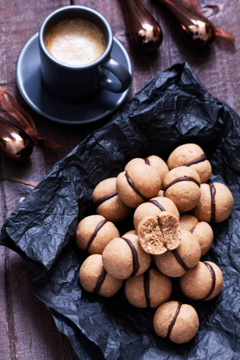

tagliatelle al tartufo
Le tagliatelle al tartufo sono un piatto tipico della cucina piemontese,tipiche soprattutto della zone di Alba e dintorni. Data la stagionalità del tartufo si possono trovare nei ristoranti da Ottobre fino a Novembre.
Baci di dama
I baci di dama sono biscotti tipici piemontesi formati da due friabili cupolette alle mandorle unite da uno strato di cioccolato fondente.
Bagna Cauda

La bagna caoda o bagna cauda è una preparazione tipica del Piemonte preparata con acciughe, olio e aglio ed utilizzata come intingolo per le verdure fresche della stagione autunnale.